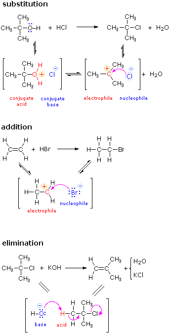
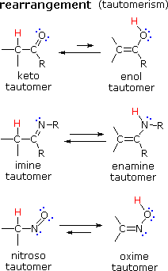
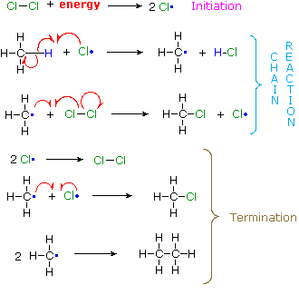
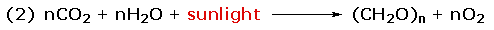
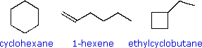
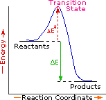
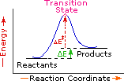
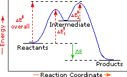
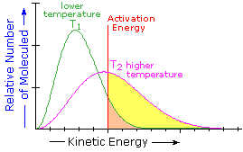
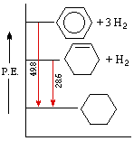

1. Ionic Reactions
The principles and terms introduced in the previous sections can now be summarized and illustrated by the following three examples. Reactions such as these are called ionic or polar reactions, because they often involve charged species and the bonding together of electrophiles and nucleophiles. Ionic reactions normally take place in liquid solutions, where solvent molecules assist the formation of charged intermediates.
 |
The substitution reaction shown on the left can be viewed as taking place in three steps. The first is an acid-base equilibrium, in which HCl protonates the oxygen atom of the alcohol. The resulting conjugate acid then loses water in a second step to give a carbocation intermediate. Finally, this electrophile combines with the chloride anion nucleophile to give the final product. |
The addition reaction shown on the left can be viewed as taking place in two steps. The first step can again be considered an acid-base equilibrium, with the pi-electrons of the carbon-carbon double bond functioning as a base. The resulting conjugate acid is a carbocation, and this electrophile combines with the nucleophilic bromide anion. | |
The elimination reaction shown on the left takes place in one step. The bond breaking and making operations that take place in this step are described by the curved arrows. The initial stage may also be viewed as an acid-base interaction, with hydroxide ion serving as the base and a hydrogen atom component of the alkyl chloride as an acid. | |
 | There are many kinds of molecular rearrangements. The examples shown on the left are from an important class called tautomerization or, more specifically, keto-enol tautomerization. Tautomers are rapidly interconverted constitutional isomers, usually distinguished by a different bonding location for a labile hydrogen atom (colored red here) and a differently located double bond. The equilibrium between tautomers is not only rapid under normal conditions, but it often strongly favors one of the isomers (acetone, for example, is 99.999% keto tautomer). Even in such one-sided equilibria, evidence for the presence of the minor tautomer comes from the chemical behavior of the compound. Tautomeric equilibria are catalyzed by traces of acids or bases that are generally present in most chemical samples. |
Since many ionic reactions proceed by bonding interactions between electrophiles and nucleophiles, it is important to understand how these qualities vary from compound to compound, and how they may be enhanced by acid or base catalysts. To explore this matter further Click Here.
2. Radical Reactions
If methane gas is mixed with chlorine gas and exposed to sunlight an explosive reaction takes place in which chlorinated methane products are produced along with hydrogen chloride. An unbalanced equation illustrating this reaction is shown below; the relative amounts of the various products depends on the proportion of the two reactants that are used.
| CH4 + Cl2 + energy |  |
CH3Cl + CH2Cl2 + CHCl3 + CCl4 + HCl |
How does this reaction take place? Gas phase reactions, such as the chlorination of methane, do not normally proceed via ionic intermediates. Strong evidence indicates that neutral radical intermediates, sometimes called free radicals, play a role in this and many other similar transformations. A radical is an atomic or molecular species having an unpaired, or odd, electron. Some radicals, such as nitrogen dioxide (NO2) and nitric oxide (NO) are relatively stable, but most are so reactive that isolation and long-term study under normal conditions is not possible.
A set of radical reactions called a chain reaction can account for all the facts observed for this process.
 | The reaction is initiated by the input of energy (heat or light). The weak chlorine-chlorine bond is broken homolytically to give chlorine atoms. | |
In these two reactions radical intermediates abstract an atom from one of the reactant molecules. If a chlorine atom abstracts a hydrogen from methane in the first step, the resulting methyl radical abstracts a chlorine atom from chlorine in the second step, regenerating a chlorine atom. This is therefore a chain reaction. | ||
| In principle a chain reaction should continue until one or both of the reactants are consumed. In practice, however, such reactions stop before completion and have to be reinitiated. This happens whenever two radical intermediates meet and combine to give a stable molecule, thus terminating the chain of reactions. Since radical intermediates are extremely reactive and are present in very low concentration, the probability that two such intermediates will collide is small. Consequently, the chain reaction will proceed through many cycles before termination occurs. | ||
|
More About Free Radicals |
Bond Energy |
|---|
Bond Energy
Since reactions of organic compounds involve the making and breaking of bonds, the strength of bonds, or their resistance to breaking, becomes an important consideration. For example, the chlorination of methane, discussed previously, was induced by breaking a relatively weak Cl-Cl covalent bond.
Bond energy is the energy required to break a covalent bond homolytically (into neutral fragments). Bond energies are commonly given in units of kcal/mol or kJ/mol, and are generally called bond dissociation energies when given for specific bonds, or average bond energies when summarized for a given type of bond over many kinds of compounds. Tables of bond energies may be found in most text books and handbooks. The following table is a collection of average bond energies for a variety of common bonds. Such average values are often referred to as standard bond energies, and are given here in units of kcal/mole.
The SI unit of energy is the joule, symbol J. To convert kilocalories into kilojoules multiply by 4.184. A useful site for unit conversions may be reached by Clicking Here.
|
Single Bonds |
ΔHº * |
Single Bonds |
ΔHº * |
Multiple Bonds |
ΔHº * |
||
|---|---|---|---|---|---|---|---|
H–H |
104.2 |
B–F |
154 |
C=C |
146 |
||
C–C |
83 |
B–O |
123 |
N=N |
109 |
||
N–N |
38.4 |
C–N |
73 |
O=O |
119 |
||
O–O |
35 |
N–CO |
86 |
C=N |
147 |
||
F–F |
36.6 |
C–O |
85.5 |
C=O (CO2) |
192 |
||
Si–Si |
52 |
O–CO |
110 |
C=O (aldehyde) |
177 |
||
P–P |
51 |
C–S |
65 |
C=O (ketone) |
178 |
||
S–S |
54 |
C–F |
116 |
C=O (ester) |
179 |
||
Cl–Cl |
58 |
C–Cl |
81 |
C=O (amide) |
179 |
||
Br–Br |
46 |
C–Br |
68 |
C=O (halide) |
177 |
||
I–I |
36. |
C–I |
51 |
C=S (CS2) |
138 |
||
H–C |
99 |
C–B |
94 |
N=O (HONO2) |
143 |
||
H–N |
93 |
C–Si |
83 |
P=O (POCl3) |
110 |
||
H–O |
111 |
C–P |
73 |
P=S (PSCl3) |
70 |
||
H–F |
135 |
N–O |
55 |
S=O (SO2) |
128 |
||
H–Cl |
103 |
S–O |
87 |
S=O (DMSO) |
93 |
||
H–Br |
87.5 |
Si–F |
132 |
P=P |
84 |
||
H–I |
71 |
Si–Cl |
86 |
P≡P |
117 |
||
H–B |
90 |
Si–O |
110 |
C≡O |
258 |
||
H–S |
81 |
P–Cl |
79 |
C≡C |
200 |
||
H–Si |
70 |
P–Br |
65 |
N≡N |
226 |
||
H–P |
77 |
P–O |
96 |
C≡N |
213 |
Some useful and interesting conclusions may be drawn from this table. First, a single bond between two given atoms is weaker than a double bond, which in turn is weaker than a triple bond. Second, hydrogen forms relatively strong bonds (90 to 110 kcal) to the common elements found in organic compounds (C, N & O). Third, with the exception of carbon and hydrogen, single bonds between atoms of the same element are relatively weak (35 to 64 kcal). Indeed, the fact that carbon forms relatively strong bonds to itself as well as to nitrogen, oxygen and hydrogen is a primary factor accounting for the very large number of stable organic compounds.
Energetics |
|---|
Reaction Energetics
Chemical reactions involve breaking and making some (or even all) of the bonds that hold together the atoms of reactant and product molecules. Energy is required to break bonds, and since the strengths of different kinds of bonds differ, there is often a significant overall energy change in the course of a reaction. In the combustion of methane, for example, all six bonds in the reactant molecules are broken, and six new bonds are formed in the product molecules (equation 1).
| Reactants | Products |
 |
The sum of the product bond strengths in this case is greater than the sum of reactant bond strengths; consequently, the products are energetically (or thermodynamically) more stable than the reactants, and energy is released in the form of heat. Such reactions are called exothermic. It is helpful to think of exothermic reactions as proceeding from a higher energy (less stable) reactant state to a lower energy (more stable) product state, as shown in the diagram on the right. Reactions in which the products are higher energy than the reactants require an energy input to occur, and are called endothermic. Photosynthesis (equation 2) is an important example of an endothermic process. Energy in the form of photons (sunlight) drives the reaction, which requires chlorophyll as a catalyst.
|  | |
| Reactants | Products |
Common sense suggests that molecules in which the bonds are all strong will be more stable than molecules having weaker bonds. Previously we defined bond strengths as the energy required to break a bond into neutral fragments (radicals or atoms). The sum of all the bond energies of a molecule can therefore be considered its atomization energy, i.e. the energy required to break the molecule completely into its component atoms. If this concept is applied to a group of isomers, it should be clear that all the isomers will have a common atomization state, and that the total bond energy of each isomer is inversely related to that isomer's potential energy. Thus, that isomer having the greatest total bond energy has the lowest potential energy and is thermodynamically most stable. To summarize, bond energy is energy that must be introduced to break a bond, and is not a component of a molecule's potential energy.
 |
The three C6H12 isomers on the right illustrate this relationship. Cyclohexane is made up of six C-C sigma bonds and twelve C-H sigma bonds configured in a strain-free six-membered ring. The isomer having a double bond, 1-hexene, on the other hand, has four C-C single bonds (all sigma) and one C-C double bond (one sigma and one pi bond). Since the pi bond is weaker than a sigma bond, cyclohexane has a larger total bond energy (by nearly 20 kcal/mol) and is thermodynamically more stable than 1-hexene. The four-membered ring compound, ethylcyclobutane, has the same kinds of bonds as cyclohexane, but they are weakened by ring strain to such a degree that this isomer is even less stable (thermodynamically) than 1-hexene.
|
The Nature of Energy |
1. Activation Energy
Since exothermic reactions are energetically (thermodynamically) favored, a careless thinker might conclude that all such reactions will proceed spontaneously to their products. Were this true, no life would exist on Earth, because the numerous carbon compounds that are present in and essential to all living organisms would spontaneously combust in the presence of oxygen to give carbon dioxide-a more stable carbon compound. The combustion of methane (eq.1), for example, does not occur spontaneously, but requires an initiating energy in the form of a spark or flame. The flaw in this careless reasoning is that we have focused only on the initial (reactant) and final (product) states of reactions. To understand why some reactions occur readily (almost spontaneously), whereas other reactions are slow, even to the point of being unobservable, we need to consider the intermediate stages of reactions.
| Exothermic Single Step Reaction | Endothermic Single Step Reaction | Exothermic Two Step Reaction |
|---|---|---|
 |
 |
 |
Every reaction in which bonds are broken will have a high energy transition state that must be reached before products can form. In order for the reactants to reach this transition state, energy must be supplied and reactant molecules must orient themselves in a suitable fashion. The energy needed to raise the reactants to the transition state energy level is called the activation energy, ΔE‡.
An example of a single-step exothermic reaction profile is shown on the left above, and a similar single-step profile for an endothermic reaction is in the center. The activation energy is drawn in red in each case, and the overall energy change (ΔE) is in green.
The profile becomes more complex when a multi-step reaction path is described. An example of a two-step reaction proceeding by way of a high energy intermediate is shown on the right above. Here there are two transition states, each with its own activation energy. The overall activation energy is the difference in energy between the reactant state and the highest energy transition state. We see now why the rate of a reaction may not correlate with its overall energy change. In the exothermic diagram on the left, a significant activation energy must be provided to initiate the reaction. Since the reaction is strongly exothermic, it will probably generate enough heat to keep going as long as reactants remain. The endothermic reaction in the center has a similar activation energy, but this will have to be supplied continuously for the reaction to proceed to completion.
What is the source of the activation energy that enables a chemical reaction to occur? Often it is heat, as noted above in reference to the flame or spark that initiates methane combustion. At room temperature, indeed at any temperature above absolute zero, the molecules of a compound have a total energy that is a combination of translational (kinetic) energy, internal vibrational and rotational energies, as well as electronic and nuclear energies. The temperature of a system is a measure of the average kinetic energy of all the atoms and molecules present in the system. As shown in the following diagram, the average kinetic energy increases and the distribution of energies broadens as the temperature is raised from T1 to T2. Portions of this thermal or kinetic energy provide the activation energy for many reactions, the concentration of suitably activated reactant molecules increasing with temperature, e.g. orange area for T1 and yellow plus orange for T2. (Note that the area under a curve or a part of a curve is proportional to the number of molecules represented.)
| Distribution of Molecular Kinetic Energy at Two Different Temperatures, T1 & T2 |  |
|---|
2. Reaction Rates and Kinetics
Chemical reactivity is the focus of chemistry, and the study of reaction rates provides essential information about this subject. Some reactions proceed so rapidly they seem to be instantaneous, whereas other reactions are so slow they are nearly unobservable. Most of the reactions described in this text take place in from 0.2 to 12 hours at 25 ºC. Temperature is important, since fast reactions may be slowed or stopped by cooling, and slow reactions are accelerated by heating. When a reaction occurs between two reactant species, it proceeds faster at higher concentrations of the reactants. These facts lead to the following general analysis of reaction rates.
Reaction Rate = |
| • |
| • |
|
|---|
Since reacting molecules must collide to interact, and the necessary activation energy must come from the kinetic energy of the colliding molecules, the first two factors are obvious. The third (probability) factor incorporates the orientational requirements of the reaction. For example, the addition of bromine to a double bond at the end of a six-carbon chain (1-hexene) could only occur if the colliding molecules came together in a way that allowed the bromine molecule to interact with the pi-electrons of the double bond.
The collision frequency of reactant molecules will be proportional to their concentration in the reaction system. This aspect of a reaction rate may be incorporated in a rate equation, which may take several forms depending on the number of reactants. Three general examples are presented in the following table.
Reaction Type | Rate Equation | Reaction Order |
|---|---|---|
A ——> B | Reaction Rate = k•[A] | First Order Reaction (no collision needed) |
A + B ——> C + D | Reaction Rate = k•[A]*[B] | Second Order Reaction |
A + A ——> D | Reaction Rate = k•[A]2 | Second Order Reaction |
These rate equations take the form Reaction Rate = k[X] n[Y] m, where the proportionality constant k reflects the unique characteristics of a specific reaction, and is called the rate constant. The concentrations of reactants X and Y are [X] and [Y] respectively, and n & m are exponential numbers used to fit the rate equation to the experimental data. The sum n + m is termed the kinetic order of a reaction. The first example is a simple first order process. The next two examples are second order reactions, since n + m = 2. The kinetic order of a reaction is usually used to determine its molecularity.
In writing a rate equation we have disconnected the collision frequency term from the activation energy and probability factors defined above, which are necessarily incorporated in the rate constant k. This is demonstrated by the following equation.
The complex parameter A incorporates the probability factor. Because of the exponential relationship of k and the activation energy small changes in ΔE‡ will cause relatively large changes in reaction rate. An increase in temperature clearly acts to increase k, but of greater importance is the increase in average molecular kinetic energy such an increase produces. This was illustrated in a previous diagram, increase in temperature from T1 to T2 producing a larger proportion of reactant molecules having energies equal or greater than the activation energy (designated by the red line.
3. Thermodynamic and Chemical Stability
 |
An important distinction can now be made between thermodynamic stability and chemical stability. Thermodynamic stability refers to the potential energy of a compound, and is related to the bond energies of its constituent atoms. Chemical stability refers to a compound's resistance to chemical reaction with a variety of reagents, and is related to the activation energy barrier it presents to possible chemical change. A comparison of cyclohexene and benzene provides a good example of this distinction. Both these compounds add hydrogen in exothermic addition reactions that give cyclohexane as a common product. From heats of hydrogenation we find that cyclohexene has a potential energy (P.E.) roughly 28.6 kcal/mol higher than cyclohexane, whereas benzene is 48.9 kcal/mol above cyclohexane. This relationship is graphed on the right.
We conclude from these measurements that both cyclohexene and benzene are thermodynamically less stable than cyclohexane, and that benzene is thermodynamically less stable than cyclohexene. We know, however, that the chemical reactivity of these unsaturated compounds does not reflect this stability order. Cyclohexene reacts rapidly with bromine, as well as with potassium permanganate and sulfuric acid, whereas benzene is relatively inert to all three reagents (in the absence of catalysts and/or heat). The chemical reactivity of benzene is therefore less than the reactivity of cyclohexene, and we may say that benzene is chemically more stable than cyclohexene - at least toward the reagents noted here.
Just as a chain is no stronger than its weakest link, a molecule may be rendered chemically unstable by one weak bond. We see this in the chemical behavior of peroxides (R–O–O–R). The O–O bond is less than half as strong as a C–C bond, and peroxides are notoriously unstable, decomposing via alkoxy radicals (R–O·) on mild heating. The useful organization of organic reactions by functional groups is a further example of how a few susceptible bonds in a molecule can determine its general chemical reactivity.
This page is the property of The Edvibe Team.
Comments, questions and errors should
be sent to contact@edvibe.co.ke.
These pages are provided to the IOCD to assist in capacity building in chemical education. 05/05/2013